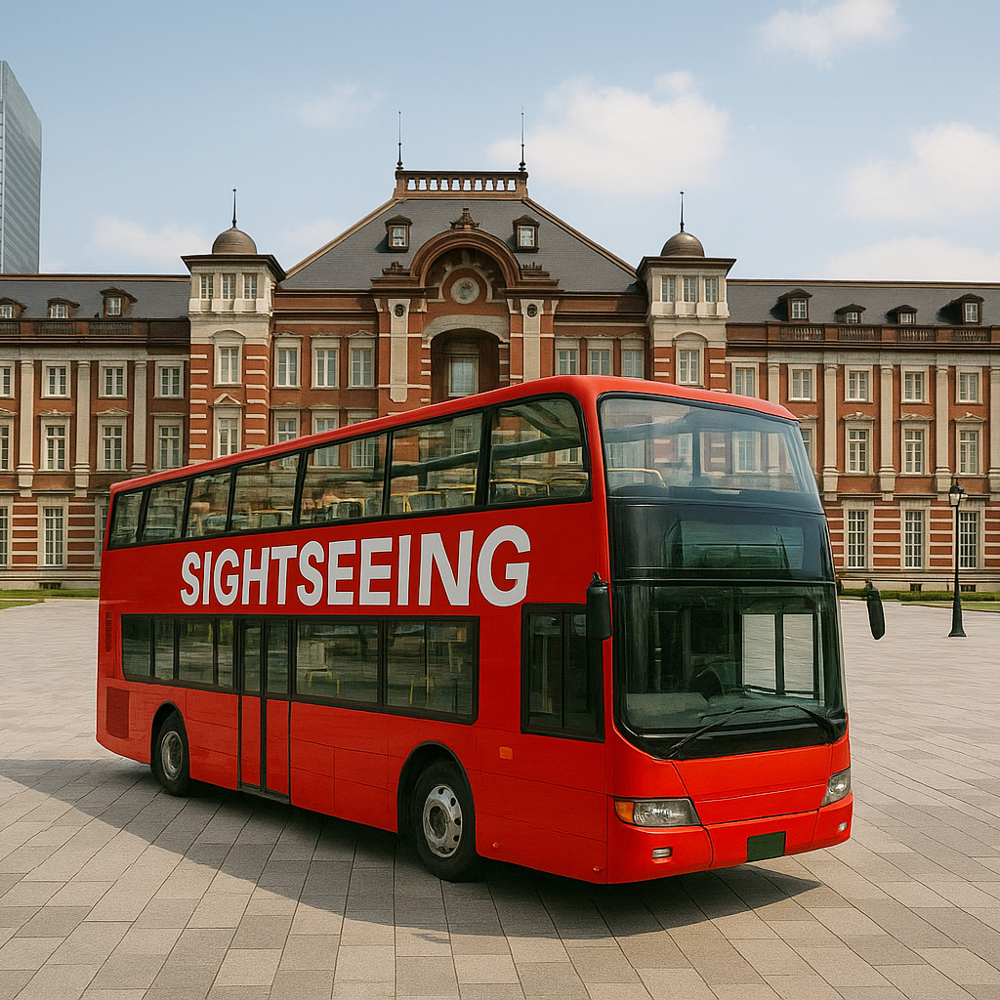

Sightseeing-Bus in Japan – Entdecken Sie Japan komfortabel und bequem
Sightseeing-Busse in Japan bieten eine der bequemsten Möglichkeiten, Städte wie Tokio, Kyoto und Osaka zu erkunden. Mit gut geplanten Routen, professionellen Guides und mehrsprachigem Service sind diese Touren ideal für Erstbesucher ebenso wie für erfahrene Japan-Reisende.
Panoramatische Stadtrouten
Die Busse fahren entlang der wichtigsten Sehenswürdigkeiten und kulturellen Highlights. Ob Doppeldeckerbus mit offenem Dach, Hop-on-Hop-off-System oder luxuriöse geführte Stadtrundfahrt – Sie genießen entspannte Ausblicke direkt vom Sitzplatz aus.
Mehrsprachige Guides & Audiokommentar
Viele Anbieter bieten Audioguides oder Live-Kommentare in mehreren Sprachen an, darunter Englisch und weitere internationale Sprachen. Kompetente Guides vermitteln historische Hintergründe, lokale Geschichten und praktische Reisetipps.
Beliebte Routen und Ziele
Zu den gefragtesten Touren zählen Stadtrundfahrten in Tokio (z. B. Asakusa bis Shibuya), Tempel-Touren in Kyoto mit Stopps bei Kiyomizu-dera und Fushimi Inari sowie Panorama-Routen in der Region rund um den Fuji. Die Strecken kombinieren bekannte Attraktionen mit weniger bekannten Geheimtipps.
Buchung und Komfort
Tickets können online oder über Hotelconcierges reserviert werden. Viele Busse sind klimatisiert, bieten kostenloses WLAN und barrierefreien Zugang. Die Haltepunkte befinden sich meist in der Nähe großer Bahnhöfe und touristischer Zentren – ideal für eine stressfreie Stadterkundung ohne komplizierte Zugverbindungen.
Warum eine Sightseeing-Bus-Tour wählen?
Eine Bustour verbindet Komfort, Information und Effizienz. Sie erhalten einen umfassenden Überblick über die Stadt und können flexibel an den wichtigsten Sehenswürdigkeiten ein- und aussteigen. Perfekt für alle, die ihre Zeit optimal nutzen möchten.
Praktische Informationen
- 🌸 Verfügbare Städte: Tokio, Kyoto, Osaka, Hiroshima, Fukuoka
- 🌸 Betriebszeiten: 9:00 – 18:00 Uhr (abhängig von Stadt und Route)
- 🌸 Preise: ca. ¥1.500–¥4.000 je nach Dauer und Strecke
- 🌸 Haltepunkte: Hauptbahnhöfe und zentrale Touristenviertel
Tags: Sightseeing Bus Japan, Hop-on Hop-off Tokio, Stadtrundfahrt Kyoto, Tokio Stadttour Bus, Japan Rundreise, geführte Bustour
Planen Sie eine Sightseeing-Bus-Tour in Japan?
Für ein noch intensiveres Erlebnis empfehlen wir die Buchung eines zertifizierten privaten Guides aus unserem Team. Alle Guides sind offiziell vom japanischen Staat anerkannt und bieten individuell zugeschnittene Touren entsprechend Ihrer Interessen an. Kontaktieren Sie Ihren Guide im Voraus, um die Verfügbarkeit zu bestätigen und professionelle Unterstützung für Ihre Reise zu erhalten.